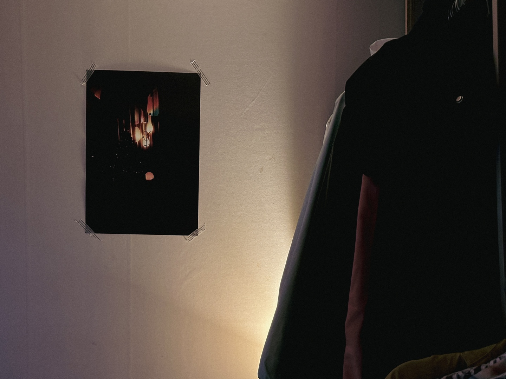
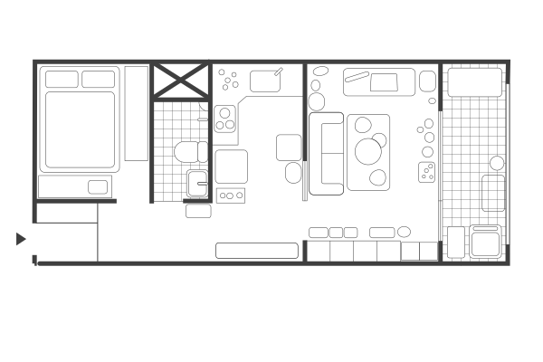

G-ARCH PROJECT

그동안 본인 인터뷰를 많이 하고 싶어 했잖아요. 회원 인터뷰를 개편하면서 첫 번째로 하게 됐는데 하게 된 소감부터 한번 들어볼까요?
작년에 되게 정신없이 1년 동안 인터뷰를 진행했는데, 하면서 나도 빨리 지아키 친구들에게 내 건축에 대한 생각과 내가 어떤 일을 하는 지랑 내가 어떤 또 게이 라이프를 살고 있는지 이런 것들을 이야기하고 싶었어요. 질문지를 받았는데 질문지가 내가 작년에 했을 때보다 훨씬 촘촘하게 돼 있어서, 답변을 먼저 쓰면서 내가 건축에 대해 어떤 생각을 하고, 지금 내가 어떤 위치에 있는지, 어떤 상황인지 정리할 수 있어서 좋았어요. 지아키 사람들한테 나댈 수 있어서 일단 기분이 좋아요.
먼저 성장 배경부터 진로를 정하게 된 계기 이런 걸 들어보고 싶어요. 저는 그런 게 항상 궁금하거든요. 건축과에 가면 신입생들한테 왜 건축과에 왔어? 이런 질문부터 하잖아요. 그게 좀 상투적이긴 하지만 상대를 파악할 때 도움이 되는 질문인 것 같아요. 그래서 좀 그런 얘기를 들어보려고 하는데, 대학에 들어가기 전에는 어떤 사람이었는지부터 얘기 해주세요.
대학을 들어가기 전에는 교회를 진짜 열심히 다니는 친구였어요. 초중고 시절을 교회를 빼고는 나를 설명할 수 없을 정도로 크리스천으로서의 정체성이 컸는데, 동시에 크리스천으로서의 나는 학교에서의 나랑은 분리가 되어 있는 사람이었어요.
제가 포천 출신인데, 중학교 때까지는 동네에서 학교를 다녔는데 고등학교를 의정부로 지원해서 멀리 다녔어요. 고등학교에 가보니까 이전과 다르게 부모님이 아는 사람이 없고, 교회에서 아는 사람들이 없는 거지. 교회와 부모님이 알고 있는 동네에서 완전히 벗어난 생활이 되니까, 처음으로 다른 자아가 나오기 시작한 것 같아요. 교회에서는 되게 착실하고 공부도 잘하고 회장 같은 거 다 하고 그랬는데, 학교에서는 욕을 입에 물고 달고 살았어요.
교회에서 바른 생활을 연기하는 게 쉽지 않았나 보다.
은근히 그랬던 거죠.
그거를 학교에서 좀 거친 말도 하고 행동도 착실하게 하지 않으면서 해소했던 거네요.
그렇죠. 그런데 또 고등학교 2학년 때는 학교에서 기독교 동아리에 들어가게 됐어요.
왜 학교에서도 기독교 동아리를 했어요?
동아리를 우리가 하나씩 꼭 들어야 하는데, 제가 알다시피 교회 오빠 같은 사람을 좀 좋아하잖아요.
아! 이제 알았어요. 사실 그동안은 정민이가 그냥 그런 스타일을 좋아하나 보다 생각했는데, 교회 오빠라고 하니까 확실히 알겠네요. 어렸을 때의 교회에서 느낀 무언가가 지금 이상형에 좀 영향이 있었을 수도 있겠네요.
교회 오빠가 약간 선망의 대상이기도 했고, 그래서 그 기독교 동아리에서도 잘 생기고 키 크고 그런 형들, 친구들이 많아서 잘생긴 애들이랑 친하게 지내면서 다녔던 거 같아요.
교회를 열심히 다닌 게 사리사욕을 채우러 다닌 거였네요. 건축과에 간 건 어떻게 간 거예요?
계기라고 할 게 별로 없는 게, 문과 이과를 정할 때, 지리랑 역사가 너무 재미없어서 이과를 정했어요. 수학도 못 하는 것 같지 않고 그래서 이과 갔더니 또 잘 맞았어요. 어렸을 때는 시골에서 자랐으니까 공부 잘한다는 이야기를 많이 들었는데, 그러다 보니 의대를 생각해 봤는데, 고등학교에 가니 현실적으로 내가 의대를 못 간다는 건 알았어요. 그래서 차선으로 선택을 한 게 생명공학이었어요. 그때 약간 황우석이 화제였던 것 같아요.
제가 입시 할 때도 생명공학 전공이 입학 점수도 높았던 것 같아요.
맞아요. 저도 인터뷰 준비하면서 오랜만에 떠올린 기억인데, 생명공학을 가서 나중에 대학을 가서 나는 무슨 연구를 할지 생각했던 게, 아이를 만드는 걸 정자랑 정자가 만나서 해도 되지 않을까? 정자랑 정자가 만나서는 왜 안 될까? 나중에 내가 연구를 해서 그걸 만들 수 있지 않을까?
정자랑 정자가?
그때부터 아이를 가진 게이 부부의 꿈을 꿨던 것 같아요.
그때 그러면 스스로 게이라고 생각은 하고 있었군요.
저는 일찍 정체화를 해서, 한 초등학교 고학년, 중학교 때는 기도하면서 많이 힘들었지만 그런데도 불구하고 나는 게이라는 걸 인정하고, 고등학교 때도 좋아하는 애들이 있었어요.
그렇군요. 근데 왜 생명공학이 아니고 건축을 전공했어요?
고3 여름방학 때인데 교회에서 수련회를 갔다가 내가 감히 생명을 좌지우지하는 신 같은 역할을 감히 인간으로서 해도 될까 하는 두려움 때문에 생명공학을 안 해야겠다고 생각했어요.
종교적인 신념 때문에 생명공학과를 가면 안 되겠다고 생각한 거네요.
고3 수시도 다 생명공학으로 썼거든요. 그렇게 생각하고 나니까 멍해진 거죠. 배치표를 보면 기계공학 화학공학 전자공학이 있어. 근데 이거 나랑 아무리 생각해도 매치가 안 돼. 나랑 매치가 안 되고 그래서 수학 교육과도 생각했는데, 내가 그렇게까지 수학을 좋아하는 것 같진 않았어요.
그러다가 건축학과를 봤는데, 제가 이과에서 문과 같은 애라는 얘기를 많이 듣기도 했고, 제 머릿속에는 건축학과는 약간 예술적인 뭔가도 있고 공학적인 것도 있고, 그런 게 섞여 있는 거로 생각해서, 건축학과로 들어왔어요.
건축학과에 들어와서 보니까 어떤 애들은 막 제일 좋아하는 건축가도 있고, 책도 이미 읽고 그런데, 저는 건축에 관련된 책 아무것도 모르고 관심이 없었거든요.
의외로 입학할 때까지는 건축에 별 관심이 없었군요.
진짜 하나도 없었어요. 그런데 건축학과 와서 1학년 때, 스튜디오 수업을 하잖아요. 스튜디오 수업이 첫 주를 하고 나니까 프로젝트 런웨이 같은 거죠.
매번 미션(과제)을 주니까?
네, 제가 프로젝트 런웨이, 도슈코 이런 거 진짜 좋아했거든요. 그래서 1학년은 저 혼자 거의 TV 나오는 도전자처럼 매주 컴페티션하듯이 너무 재밌게 보낸 거죠. 그렇게 하니까 창작하고 발표를 하고 크리틱을 받는 걸 되게 좋아해서 건축에 재미를 확 붙이게 됐어요.
막상 건축과에 들어갈 때까지는 막 크게 건축에 대한 생각이 별로 없었는데, 약간 프로젝트 원웨이를 하는 느낌으로 스튜디오 수업을 하면서 건축에 재미를 붙인 거네요. 그럼 학교 다니면서 했던 프로젝트 중에 가장 기억에 남는 프로젝트가 어떤 거예요?
졸업 전시에 했던 프로젝트가 디자인 프로젝트는 아니었고, 분석에 가까운 프로젝트였어요. 그때가 제가 지아키에 들어오고 한 6개월 정도 후에 일인데,
지아키에 들어온게 4학년 2학기 인가요?
네 맞아요. 그때 막 게이 친구들이 생기기 시작하면서, 이 게이니스함을 프로젝트에 녹이고 싶었던 거죠. 5학년 때 마지막 한 번밖에 안 남았으니까 소위 정체성 작업이라고 말하는 걸 좀 하고 싶었어요. 학기 첫 시간에 교수님이랑 어떤 주제로 할 지 이야기 할 때 저는 소수자를 위한 건축물을 하고 싶다고 소심하게 말을 했어요. 근데 한 서너 번째 뒤에 다른 친구가 ‘전 성 소수자를 위한 건축을 하겠습니다’ 하는 거에요. 그러니까 갑자기 질투심이 나서 그다음 주에 저도 소수자를 성소수자로 정했다고 했죠.
경쟁을 했군요.
그래서 그 친구는 종로를 사이트로 하고 저는 이태원을 하고 이렇게 한 거죠. 근데 그건 되게 자연스럽게 나눠졌어요.
그 내용이 뭐예요? 저도 내용을 자세하게는 잘 몰라서 설명을 좀 해주세요.
개인적인 생각에서 시작한 작업인데요. 일상에서는 커밍아웃 하지 않은 이상, 성소수자인 것을 잘 드러내지 않으려고 하잖아요. 그런데 클럽을 가면 인터넷이나 영화에서 보던 누구보다도 게이 같은 사람들이 있는 거예요. 평소에서는 안 그럴 것 같은데 클럽만 가면 더 유난스럽게 여성적인 모습을 많이 보이고요. 저는 평소에도 스스로 연극적인 행동을 한다고 생각했는데, 저도 클럽에 가면 좀 더 약간 더 연극적으로 되는 거예요. 말투도 변하고요. 이태원에 가면 더 게이 같은 모습을 드러낼 수밖에 없는 상황이라고 생각을 해서 그것 또한 되게 연극적인 행동인 것 같다고 생각했어요. 근데 사실 클럽이랑 거리가 낮에는 그냥 일상적인 공간이잖아요.
그래서 공간을 설계하기 보다는, 퀸이나 근처 바에 테라스가 있잖아요? 그 테라스가 공공을 향해서 발현되는 공간이라고 생각해서 그 테라스라는 공간에 대해서 분석을 좀 하겠다 했죠. 그러니까 교수님이 ‘넌 설계는 안 하니?’ 하셔서 내가 ‘저희 건축 설계학과 아니고 건축학과 아니에요? 전 설계 안 할 건데요. 이번 학기는 졸업 전시할 거예요.’ 그랬죠. 그때 담당 교수님이 ‘그 건물이 성소수자들이 많이 가는 건물이기 때문에 그 건물만의 무언가가 있을 거다. 그거를 찾아라’하고 계속 얘기를 하는 거죠. 근데 뭐가 있겠어요
건물의 형태가 특이한 건 아니니까 공간적인 특징은 사실 잘 없죠.
전시할 때 교수님이 원하는 도면 같은 것도 살짝 그리긴 했어요. 뭔가 했는데 그건 솔직히 그냥 시켜서 한 거기 때문에 별로 안 하고 싶었고 그 거리에 있는 건물의 입면을 다 그려서 전시를 했어요. 보이는 건물의 형태는 크게 다르지 않고 사용자가 어떻게 쓰느냐에 따라 다르다는 걸 교수님한테 말하고 싶어서 그 거리의 외부 입면만 그려가지고 전시를 한거죠. 그리고 그 거리의 낮을 영상으로 찍어서 여기가 되게 특별할 것 같은데 그렇지 않다는 걸 보여줬죠. 원래는 그걸 좀 더 분석하고 싶었는데 분석하지는 못했어요.
그러면 공간을 설계한 부분은 없는 건가요?
있긴 해요. 실내에 얼굴이 가려지는 류의 벽들을 세워서 서로의 익명성을 만드는 공간들을 만든다거나, 지하에 클럽이 있는 외부 입면에 거울을 비스듬히 설치해서 발만 비치고, 하지만 들어가지 않으면 무슨 일이 일어나는지 모르는 약간 알 듯 말 듯 한 공간을 만드는 그런 것들을 했었습니다.
어떻게 보면 공간을 계획했다기보다는 익명성 같은 키워드들을 공간적으로 표현할 수 있을지 고민해서 설치 미술 같은 작업을 한 거네요. 거기에 대해서는 그 학부 이후의 이야기를 하고서 한 번 더 이야기해 보면 좋을 것 같아요.
학부를 졸업하고 설계사무소에서 일했는데, 사무실에 들어갈 때 어떤 점을 고려했는지 궁금해요.
졸업할 때는 제 머릿속에 있는 설계사무소의 모습은 약간 회사원의 모습이었어요. 그냥 회사원의 느낌이 강했기 때문에 설계할 생각이 없었고, 건축 매거진 면접을 봤어요. 결과적으로 한 곳은 떨어지고 한 곳은 붙었는데, 막상 면접 과정에서 대화를 하다 보니까 내가 원하는 게 아니고 잘할 것 같다는 생각도 안 드는 거죠. 근데 저희 집은 졸업을 하면 돈을 딱 끊겠다는 선언이 있었기 때문에, 돈을 벌긴 해야겠고 일단은 건축 사무소로 들어가볼까 해서 가게 됐어요.
돈을 벌어야 하니까, 설계사무소를 가고 싶었던 건 아니지만 배운 게 도둑질이라고 그냥 설계사무소로 가게 된 거군요.
할 줄 아는 게 이거니까
그럼 많은 설계사무소 중에서 그 회사에 가게 된 이유는 뭐예요?
설계사무소 홈페이지를 보면 카테고리가 보통 하우스 커머셜 이렇게 있는데, 제가 들어간 회사는 그중에 인비저블띵(invisable things)이라는 카테고리가 하나 있어서 거기에 본인들이 생각했던 거나 책을 만들었던 것을 올려뒀더라고요. 건물 설계만 하는 것도 아니고 전시도 하고 리서치도 하는 게 되게 매력적으로 다가와서 다니게 되었죠.
설계사무소를 한 3년 반 다녔나요?
네, 3년 반하고 반년 더 딴 데서 다녀가지고 총 4년 다녔어요.
설계사무소에서 직원으로 설계를 해보면서 가장 기억에 남았던 게 뭔지 궁금해요.
앞서 말한 거랑 좀 다르게, 다양한 걸 기대하고 갔는데 건물 설계만 거의 했어요.
설계사무소가 자리 잡는 초기 과정에는 설계만으로 유지가 안 되니까 설계 외적인 프로젝트도 다양하게 하는데, 어느 정도 자리를 잡게 되면 건축 설계하는 게 돈이 제일 많이 되기도 하고 일이 계속 들어오면 다른 일을 병행하겠다는 마음이 있어도 그게 동시에 잘 안돼서 설계만 하게 되는 사무실들이 많은 것 같아요.
정확해요. 그리고 제가 딱 들어갔을 때부터 사무실이 이제 건축을 해야겠다 약간 그런 시기였던 것 같아요. 그래서 리서치나 전시 같은 것도 안 한 건 아닌데 되게 작은 비중이었어요. 근데 회사에 입사하고 참여한 현상 프로젝트가 연달아서 당선이 됐어요. 그러면서 건축 설계에 대한 즐거움을 많이 알게 됐어요.
이것도 프로젝트 런웨이랑 연결 되는군요. 경쟁을 좋아하시네요.
내가 못하지 않는다는 생각에 자신감도 붙었죠. 사실 학교에서는 성적이 좋은 학기가 많지 않았어요. 그랬는데 여기서는 내가 말하는 거를 되게 소장님들이 잘 받아들여 주고, 그러니까 그제서야 나를 좀 알아주는 사람들을 만난 것도 커요. 내가 건축 설계를 잘 할 수 있는 사람이구나라는 것을 얻었고 동료들을 진짜 많이 얻었어요.
설계사무소를 4년 하고서 지금은 대학원을 다니고 있잖아요. 대학원에 진학한 계기는 뭐예요?
사실 학교 다닐 때부터 건축 이론 쪽으로 공부를 더 하고 싶었었어요.
그런 얘기를 했던 것 같아요. 건축 이론을 공부하고 싶다.
나는 설계 디자인보다 분석하고 글을 쓰는 게 나랑 더 잘 맞을 거라고 생각했던 것 같아요.
학교에 다닐때는 경쟁에서 자꾸 져서 그런 생각을 한 거군요.
맞아요. 제가 디자인 수업보다는 그런 수업들이 또 성적이 좋았거든요.
근데 또 막상 일을 할 때는 디자인에도 자신감을 얻긴 했지만, 어쨌든 그때 가졌던 생각 때문에 이론을 공부하고 싶다는 생각이 이어진 거군요.
네 그리고 동시에 석사라는 타이틀을 갖고 싶었던 것도 크고요. ‘내 이름 옆에 뭐 하나 더 있었으면 좋겠다’ 이런 생각을 계속한 것 같아요. 저는 돈보다 명예가 되게 중요한 사람이라서
그럼 박사도 하고 싶은 생각이 있어요?
석사 끝나고 바로는 아니고 돈은 좀 벌고 하고 싶어요.
학위를 더 가지고 싶은 욕망이 있군요.
석사도 10개 따고 싶어요.
석사 10개…
제가 도시와 퀴어에 대해서 책, 세미나, 전시를 진행하는 서울퀴어콜렉티브라는 팀으로도 활동을 했는데, 거기에 있는 멤버 중에 이론적으로 되게 탄탄하고 배울 점이 많은 분이 계셨어요. 그분을 보면서 나도 저렇게 내 말을 지지해 줄 수 있는 저렇게 학술적인 언어를 가지고 싶다고 생각했죠.
내 말과 생각을 뒷받침해 줄 수 있는 게 필요했군요.
이론적인 것들을 공부하면 내 말에 좀 더 설득력이 생길 것 같다. 그런 학술적인 언어들이 좀 필요했어서 그런 공부가 더 하고 싶었고 그리고 그냥 일단 설계하는 게 좀 지쳤어요. 어차피 지쳤는데 내가 집에서 혼자서 공부하는 것보다 대학원 가서 공부하면 학위도 나오고 더 당위성이 생기잖아요.

제가 진로를 결정한 과정들을 물어본 이유는 정민 씨를 소개하기 위한 것도 있지만, 그 과정들에서 퀴어에 관심이 이어지고 있다고 생각해서였어요. 아까 이야기한 학부 프로젝트도 퀴어가 주제였고, 근무했던 설계사무소도 퀴어프렌들리한 분위기였던 것으로 알고 있고, 그리고 지금 소속되어있는 대학원 연구실도 제가 알기로는 소수자 쪽에 관련된 연구를 많이 한 것으로 알고 있어요. 그래서 진로를 결정하는데 그런 점도 영향을 끼치지 않았나 생각했는데 그 부분에 대해서도 얘기해 줄 수 있나요?
맞아요. 아까 제가 하는 말에 대한 학술적인 당위성이 좀 있었으면 좋겠다고 이야기했는데, 내가 하고 싶은 말이 건축과 퀴어와 소수자와 도시에 대한 것이고, 그거에 대한 당위성이 필요했던 거예요.
그렇기 때문에 대학원도 그런 방향으로 가게 된 거군요.
네. 근데 소수자 정체성이랑 건축을 묶는 게 저한테는 되게 힘든 것 같아요. 얘기를 하고 싶은데 내가 성소수자인 거랑 건축을 과연 어떻게 연결할 수 있을지는 졸업 전시부터 계속해서 하는 고민이에요. 소수자 정체성을 건물에 드러내는 것도 좀 이상하다고 생각한단 말이에요.
드러내도 장식적인 요소에 그칠 수도 있는 거죠. 아까 졸업 전시에서도 결국 그런 어떤 키워드들을 공간화하다 보니 설치 미술 같은 작업이 된 거잖아요. 사실 우리가 외계인이 아니고. 공간을 엄청 특별하게 사용하지는 않아서 퀴어정체성을 공간하고 엮는 게 쉽지는 않은 것 같아요.
저는 그래서 그런 고민에 대한 해답의 실마리를 건축보다는 도시로 포커스를 옮기면 조금은 찾을 수 있지 않을까 그런 생각을 한거죠.
건축 레벨에서는 퀴어의 특징을 이야기하기가 어려운데 도시 레벨로 가서 퀴어가 도시를 사용하는 방법을 이야기하면 조금 더 소수자들에 대한 이야기를 풀 수 있겠네요.
맞아요. 그래서 지금 도시 계획을 공부를 하고 있는 거고, 제가 요즘 읽고 있는 텍스트들은 도시에 대한 텍스트들이랑 도시랑 연관이 없더라도 퀴어에 대한 텍스트들을 열심히 읽으려고 하고 있어요.
근데 계속 고민이 되는 게 제가 게이라고 해서 제가 사는 집에서 게이적인 요소가 나타날 거라고 생각하지 않는데 동시에 정말 티가 안 날까 약간 그런 생각도 동시에 하고 있어요.
티가 나죠.
그렇다면 내가 게이이면서 동시에 건축가인 것이 건축을 할 때 완전히 분리되지 않고 어딘가에서 조금 드러나는 지점 있지 않을까 그런 생각도 하고 있습니다.
30대 게이들 집의 특징으로 식물이나 노란 조명 같은 얘기들을 하는데, 그게 게이여서 꼭 그런 거냐고 하면 아니라고 할 수도 있지만, 게이들이 많이 그렇게 하는 것도 사실이잖아요. 그렇지만 이걸 특징으로 이야기할 때는 좀 조심해야 하는 부분도 있는 것 같아요.
맞아요. 이게 소수다 보니까 게이는 이렇다 하면 갑자기 모든 게이가 그렇게 돼버리는 거죠.
안 그런 게이도 있는데
그러니까 오히려 소수자에 대해서는 이런 게 특징이다라고 말을 못 하는 것 같아요.
저도 그래서 사실은 정민 씨가 학부 때 졸업 전시했던 프로젝트를 처음 들었을 때는 그런 마음이었어요. 게이가 다 연극적이라고? 아닐걸?
맞아요. 그런 식의 평도 했었어요.
근데 나이 들면서 저도 회사에서의 삶과 개인적인 삶의 괴리가 점점 커지는 것 같아요. 그래서 이제는 연극적이라는 게 이해가 되기도 하는데, 정민 씨는 기독교 집안에서 자랐기 때문에 삶을 분리하는 것이 고등학교 때부터 일상이었기 때문에 그런 생각을 한 것 같아요. 그렇지만 일상에서 한 번도 게이인 나와 아닌 나를 분리해 보지 않고 산 친구들도 있잖아요. 굳이 숨기지 않는 삶을 사는 친구들이 있는데 그런 사람들이 봤을 때는 이해할 수 없는 부분일 것 같아요.
그래서 제가 예전에는 그런 얘기를 안 했었는데 이제는 자전적인 작업이라는 말을 강조하고 있어요. 이건 그냥 나라는 개인의 생각이고, 나에 대한 얘기고 그렇게 표현을 많이 하는 것 같아요. 이게 일반화가 되면 안 되니까요.
일반화하면 안 되지만 그렇다고 특징이 아닌 것은 아니죠.
특징이라고 하면 범주화할 수밖에 없으니까요.
그렇죠. 게이의 특징을 얘기해 봐. 게이 건축의 특징을 얘기해 봐. 그러면 특징을 묶어야 하는데 이 안에 사람들이 다 다양한데 그걸 묶는 것에 반발이 있을 수도 있고 그래서 조심스러울 수밖에 없는 부분인 것 같아요.
개인적인 프로젝트들에 대한 얘기를 좀 하고 싶어요. 아까 서울퀴어콜렉티브 얘기도 했지만 제가 알기로는 그것 말고도 개인적인 프로젝트를 계속하고 있는 걸로 알고 있어요. 여러 가지 프로젝트가 있는 것 같은데 그 프로젝트에 대해서 좀 간단하게 어떤 일들을 했는지 소개해 주면 좋을 것 같아요.
제가 개인적인 프로젝트가 생각보다 그렇게 많지 않아요. 꾸준히 해왔던 프로젝트를 생각해 보면 책을 만들고 있거든요. 개인적인 프로젝트성 책을 몇 권을 만들었는데 가장 처음으로 했던 거는 학생 때 사진집을 만들어서 크라우드 펀딩을 했던 거였어요.
그거 저 하나 있어요.
어 맞아요. 그때 학교에서 하는 건축 프로젝트들이 조금 질렸던 시기이기도 하고 건축을 다른 방식으로 말하고 싶었어요. 내가 잘하는 게 뭘까 이런 생각을 했는데 2011년부터 필름 사진을 줄곧 찍어왔더라고요. 근데 주로 건축을 찍었던 사진들이 좀 많은데 단렌즈다 보니까 건축의 전체를 찍는 건 힘들었고 부분 부분만 이렇게 찍는 사진들이 많았어요. 그게 약간 부분적이고 파편으로 있어서, 사람이 손이 있고 발이 있는 이런 기관이 있는 것처럼 건축물을 찍은 게 아니라 한 기관들을 찍은 느낌이 드는 거예요. 그래서 약간 그것들이 모여 있는 책이라고 생각해서 '바디'라는 이름으로 건축 사진 책을 냈어요. 그리고 사진집으로만 끝나고 싶지 않아서 몇몇 사진으로부터 영감받은 생각들을 정말 짧은 초단편 소설로 만들어서 넣었어요.
뭔지 기억이 나요. 최근의 작업은 어떤 게 있나요?
최근에는 경기 북부 어린이 박물관과 함께 안티프리즈라는 매거진을 만드는데 참여하고 있는데 현재 2호까지 나왔고 올해 상반기에 3호와 4호를 출간을 준비하고 있습니다.
새로 출판하는 책도 있죠?
네, 집에 대한 에세이가 곧 출간을 앞두고 있어요. 20~30대 청년들이 자가로 집을 얻는 경우는 별로 없잖아요. 그래서 전세 아니면 월세에 살게 되는데, 그렇게 사는 데에 있어서 기쁨과 슬픔을 에세이의 형식을 빌려서 쓴 책이에요. 혼자 쓴 건 아니고 같이 쓴 사람이 있는데 각각 챕터를 나눠서 쓰게 되었습니다.
쓰게 된 계기가 유튜브라고 알고 있어요.
처음에 ‘서울을 이상한 도시’라는 유튜브를 하는 분이 다른 사람의 집을 가서 인터뷰하는 ‘월세 아니면 전세라는 프로젝트’의 2호를 저희 집에서 촬영했는데, 저랑 되게 대화가 잘 돼서 프로젝트를 정민 씨랑 같이 진행하고 싶다고 하신 거죠.
그래서 그 뒤로 쭉 같이한 건가요?
그 뒤로 몇 개의 집을 같이했어요. 근데 이거를 한 출판사에서 재미있게 보고 이 내용들을 책으로 만들었으면 좋겠다고 했는데, 우리는 그냥 방문기의 책은 내고 싶지 않았어요. 영상이 그대로 책이 되는 거는 큰 의미가 없다고 생각했고, 그냥 그 집을 다니면서 들었던 단상들을 모은 책이라고 보시면 좋을 것 같아요.
너무 기대되네요. 그 외에 기억에 남는 개인프로젝트가 있나요?
정말 감사하게도 제가 퇴사를 하고 한 디자이너로부터 연락이 와서 그 디자이너의 전시를 위한 가구를 만들게 됐어요. 절 좋게 봐줬는지 의뢰를 주셔서 정말 재미있게 작업을 했어요. 근데 디자인 과정이나 결과물도 마음에 들었지만, 무엇보다도 그 전시 내용이 퀴어 아카이브 전시였다는 게 좋았아요. 저는 퀴어와 제 작업 사이에 일적인 관계를 잘 만들지 못하는데, 퀴어 전시에서 함께 작업을 하는 것을 계기로 제가 고민하는 것들에 대한 해답을 얻을 수 있지 않을까 그런 생각이 들었거든요. 좋은 기회였다고 생각을 했고, 사실은 이 프로젝트 이외에 많은 퀴어 작가들의 러브콜을 받기를 기대를 했어요. 근데 하나도 오지 않았죠.
왜 안 왔을까요?
한 명은 왔는데 예산으로 잘렸어요.
제 생각에는 퀴어 전시든 어떤 전시든, 전시하는 사람이 가구를 제작을 누군가한테 의뢰해서 한다는 게 쉬운 일은 아닌 것 같아요. 돈이 일단 많이 들고 가구까지 디자인해서 하면 너무 좋지만 그렇게 할 수 있는 여력이 되는 사람이 많지는 않을 수도 있겠다는 생각이 드네요.
그리고 사실 작업을 하는 사람들이 자기 작업을 위한 가구까지 다 디자인하는 경우도 많고요.
그러면 이 자리를 빌려서 정민 씨와 협업했을 때 더 좋은 점을 하나 어필해 주세요.
어떡해. 어필 같은 거 되게 못 해요. 여태까지 한 인터뷰가 어필이 되지 않았을까요.
정민씨가 계속하고 있는 작업이 건축 작업에 국한되어 있지 않은데 건축사 공부도 하는 걸로 알아요. 정민 씨는 궁극적으로는 건축사무소를 하고 싶은 건지 궁금해요.
건축사무소를 생각하고 있고, 배운 게 도둑질이라고 내가 가장 오랫동안 해 온 것은 건축이잖아요. 설계사무소에서 실무를 하다 보니 건축을 내가 생각보다 좀 잘할 수 있겠다는 생각이 들어서 건축사 사무소를 운영하는 것을 생각하고 있어요. 다시 회사를 다니는 것도 생각해 봤는데 이게 기질인지 제가 회사랑 그렇게 잘 맞지 않아요. 결정을 제가 내리고 싶은 게 있어요.
저는 그래도 정민 씨가 궁극적으로 하고 싶은 일이 전통적인 건축사무소는 아닐 거라고 생각했는데 어떤가요? 건축 이외에 개인 프로젝트를 많이 하는 게 건축만 하고 싶지 않아서 그런 것들을 하고 있을 수도 있고 아니면 단순히 경제적인 이유로 그런 일들을 하고 있지만 궁극적으로는 건축만 하고 싶은 걸 수도 있잖아요.
제가 하나에 집중을 잘 못하는 성격이기도 하고, 올라운더가 되고 싶은 생각도 있어요. 저는 하나에 엄청나게 집중해서 하는 것보다는 여러가지를 두루두루 해내는 게 제 무기인 것 같거든요. 전통적인 건축사무소를 하고 싶지 않다기보다는 내가 살아남기 위해서는 그런 사무소를 할 수 없고 나한테 잘 맞는 게 그게 아닌 것 같다고 생각하고 있습니다.
혹시 정민 씨는 건축이 아닌 일만 하는 것도 괜찮은가요?
그러면 아쉬울 것 같아요.
그러면 반대로 건축만 하는 거는?
더 아쉬울 것 같아요. 그것만 하면 저는 지루해서 못 버틸 것 같아요. 건축은 기간이 길잖아요. 그거를 집중해서 하면 2년 동안 하나만 해야 한다는 거잖아요.
건축일을 여러 개 할 수도 있죠.
그렇게 할 수도 있긴 한데, 그러면 저는 짧은 일들을 중간에 한 번씩 해야 할 것 같아요.
마지막으로 건축가의 집이라는 주제로 건축 분야에서 일하는 우리 회원들이 어떤 집에 살고 있고, 집에서 어떤 점이 불만이고, 어떤 집에 살고 싶은지 이런 얘기들을 들어보고 싶어서 질문들을 준비했어요.
지금 살고 있는 집에 대해서 간단하게 소개를 먼저 부탁드릴게요.
저는 용산구 원효로에 있는 재개발 아파트의 전세로 이제 햇수로 5년째 살고 있습니다.
그럼 이사온 게 2019년이네요?
네, 두 번 재계약을 했죠.
이 집을 구하게 된 계기가 어떻게 되나요?
이전에는 제가 학교 근처에 살았는데 그 집이 너무 좁기도 했고 월세였고 계약이 끝나갔어요. 취업을 하고 한 5개월 뒤에 내가 이 집으로 이사 왔는데 취업을 하니까 중소기업 전세대출을 받을 수 있더라고요. 그래서 전셋집을 찾아다녔는데 동네를 이쪽으로 온 거는 마침 용산 근처에 사는 친구들이 많았어요. 근데 전세가 제 예상보다는 너무 비싼 거예요. 그러던 중에 친구가 이 집을 추천해 줬어요. 이쪽에 재개발 아파트가 있는데 이쪽은 어때?
재개발 아파트가 투자 목적으로 소유하고 있는 사람들이 많아서, 지어진 지는 오래됐지만 건물의 크기에 비해서 좀 임대료가 싸다고 들었어요.
매매랑 임대랑 가격이 엄청 크게 차이 나요.
재개발 아파트라고 하면 재개발이 시작되면 더 살 수가 없게 되는 거니까 그런 부분이 불안하거나 걱정되진 않았나요?
사실 걱정이 되게 많이 됐는데, 이 집이 아까 외관이 많이 낡았잖아요. 제가 처음에 이 집 보러 왔을 때 비가 왔나 그랬을 거예요. 건물이 무너질 것 같고 으스스하고 그래서 문 열 때까지도 기대를 전혀 안 했어요. 근데 현관문을 열었는데 집의 크기가 내가 여태까지 봤던 것보다 좀 넓고, 도배랑 장판을 하고 가구 배치를 한 모습이 확확 그려지는 거예요.
사실 공간이 너무 좁으면, 가구 배치를 어떻게 해야 할지 감도 안 오잖아요. 원래 살던 집보다 집이 크기가 크고 하니까 그려지는 게 있었나 봐요.
네, 그려지는 게 있어서 바로 그냥 계약했어요. 그러니까 재개발 때문에 두려운 건 있었지만 그 전집에서 2년 살았거든요. 2년 뒤에 또 이사 가면 되겠지. 그때 되면 회사를 2년 더 다녀서 돈을 많이 모으겠지 생각했어요. 모으진 않았지만. 그리고 2년 안에는 설마 재개발이 되겠어! 그런 생각이 있었고요. 근데 여기 살면서 힘들었던 거는 한 번씩 재건축 심의 통과 이런 현수막이 붙어요. 명절에 온갖 건설사에서 현수막이 다 붙어요. 그런데 최근에 건설 경기가 안 좋아졌잖아요.
경기가 많이 안 좋죠.
그래서 이번 명절에는 하나도 안 붙었어요.
기뻤겠다.
속으로 저는 너무 기뻤죠.
그동안은 그런 게 붙어 있으면 기분이 어땠어요?
나는 여기 살고 있는 사람인데 이 아파트의 분위기는 빨리 이 집이 무너지게 만들려고 하는 사람들밖에 없구나. 그러니까 무너질 것 같은 집에 계속 사는 거예요. 그래서 우울할 때가 많았어요. 그랬는데 경기가 안 좋아지면서 배관 공사도 새로 하고 있어요.
참고 참다가 재개발이 쉽지 않아 보이니까 공사를 하는군요.
네, 그리고 하나 더 좋은 거는, 계약을 할 때 집주인이 제가 ‘혹시 벽에 뭐 박아도 돼요’ 하고 물어보는데, 그분이 핸드폰하다가 그냥 ‘그러세요’ 하더라고요.
집을 어떻게 쓰든지 별로 신경을 안 쓰는군요. 어차피 재개발이 목적이라.
아예 신경 안 쓰더라고요. 재개발 투자 목적이니까. 그리고 지금 두 번 재계약을 했는데 단 1원도 올리지 않았습니다. 그래서 저는 이 집이 무너질 때까지 살 거예요.
일과에 따라서 이 집을 어떻게 사용하는지 궁금해요. 집이 크진 않지만, 방이 2개가 있고 방을 연결하는 복도 겸 주방이 있어서 이 공간을 어떻게 구분해서 쓰는지 그런 게 궁금했거든요. 집에서 보내는 하루를 설명해 주시면 좋을 것 같아요.
근데 정말 원치 않는 대답이 나올 것 같은데, 저는 루틴이 없어요. 보통 침대에서 일어나는 게 9시쯤이에요. 9시쯤에 일어나서 컴퓨터 앞에 앉아요. 그리고 뭔가 유튜브 같은 거를 살짝 눌러보고 카톡 같은 걸 그때 봐요. 할 일 있으면은 할 일을 컴퓨터 앞에서 하고, 아니면 ‘오전에 공부를 할까? 오후에 약속 있으니까’ 그럼 오전에 건축사 시험공부를 하고 아니면 ‘이따 저녁에 약속 있으니까 오늘 오후에 운동해야지’ 하면서 이렇게 그냥 매일매일 보내요.
지금 이야기한 모든 일들은 거실에서 이뤄지는 거네요? 그러면 침실은 잘 때만 가요?
네. 저는 침실이랑 일하는 공간이 분리된 게 너무 필요했고, 일어난 후에는 침실에서 누워 있는 일도 거의 없어요.
구분이 확실하네요.
거실에서 모든 걸 해요. 저는 진짜
근데 루틴이 없다고 얘기해줬는데 생각보다 루틴이 있는데요.
그래요? ‘오전에는 요가를 하고요. 오후에는 커피 한잔 마시고 일어나면 또 커피를 내려요.’ 저는 이런 사람이 아니라서 걱정했어요.
그런 사람이 어디 있어요?
가끔 있는 것 같더라고요. 그런 루틴을 원하는 줄 알았어요. 형은 좀 그런 사람이지 않아요?
저는 약간 그런 사람인 것 같긴 한데, 아무튼 저는 그런 게 항상 궁금했어요. 살다 보면 방이 하나 더 있었으면 좋겠다고 생각할 때가 있거든요. 방이 하나 더 늘어난다면 어떻게 그 방을 쓰고 싶은지 궁금해요.
저는 침실과 옷방을 나누고 싶은 것밖에 없어요. 방 하나를 더 원한 적은 딱히 없는데 방이 하나 생기면은 그러니까 침실은 정말 잠만 자는 방이고 싶고, 침실이랑 옷방을 나눌 것 같긴 해요.
집을 쓰는 방식이 저는 재밌다고 느껴져요. 정민씨는 잠과 식사와 화장실 그러니까 기능적인 것들을 제외하고서는 그냥 한 공간에서 모든 걸 하고 싶어 하는 것 같아요.
맞아요. 저는 한 공간에서 다 있는 게 좋아요.
그러면 거실이 큰 집을 원하겠네요.
맞아요. 여기서 작업도하고 물건도 적당히 쌓아놓고 여기에 다 기르고 여기서 다 있어야 돼요. 책도 여기 있어야 하고 컴퓨터도 있어야 하고. 저는 그게 좋아요. 책만을 위한 방 이런 거 싫어요.
근데 저는 이렇게 물건을 많이 쌓아둔 공간에 있으면 이 물건들이 저를 공격하는 느낌이에요. 저는 이런 데서 휴식을 못 해요.
전 너무 사랑스러워요. 이 난장판 책장에서 ‘이런 것도 있었지, 맞다!’ 하면서 시간을 보내기도 해요. ‘이 책 여기 있었구나!’하고 약간 그런 발견의 즐거움.
나중에 누군가랑 같이 살고 싶은 생각이 있나요? 가족 아니면 애인, 반려동물과 함께하는 다양한 가족 형태가 있잖아요. 지금은 혼자 살고 있지만 같이 사는 가족을 만들고 싶은 생각이 있는지 아니면 그런 게 필요하다고 느낄 때가 있는지 궁금해요.
필요하다고 느낄 때는 별로 없어요. 혼자 사는 게 좀 익숙하긴 해요. 저는 동거를 한 적도 없고
20살 때부터 혼자 살았어요?
20살 때부터 얘기하면, 하숙도 살아봤고, 룸메이트랑 둘이도 같이 살아봤고, 5명이 같이 산 적도 있어요.
어떻게 5명이 같이 살아요?
학교 다닐 때 방 하나에서 다 같이 자고, 다른 방에서는 컴퓨터가 있어서 다 같이 작업만 하는 집이었어요.
오. 최악이다.
저흰 그걸 작업실이라고 불렀어요.
작업만 하는 공간이 아니고 근데 생활도 하는 거예요?
작업만 하는 게 아니라 생활하는 집이에요.
미쳤다.
제가 제일 추위를 덜 타니까 저는 창문 쪽에서 자고.
어쨌든 저는 제가 경제적으로 여유로워지고 좀 집이 넓어지면 강아지와 살고 싶긴 해요. 왜냐면 어렸을 때부터 부모님이 마당에 집에서 마당에서 강아지를 키웠고, 그래서 강아지를 키우고는 싶은데 지금은 절대 아니고요. 지금 집도 좁고 내가 아침저녁으로 점심으로 산책을 할 수 있는 상황도 아니고 돌볼시간도 없고 돈 없고 공간도 없어서요.
애인이랑 같이 살아본 적은 없지만 생각을 해봤는데 저는 같이 살 수 없을 것 같아요.
그냥 근처에 따로 살고 이런 걸 오히려 선호하겠네요.
여태까지도 만났던 사람이 우리 집에서 잘 때가 있잖아요. 다음 날 점심쯤 됐는데 막 누워 있으면 너무 힘들어요. 당장 쫓아내고 싶어요. 빗자루로 엉덩이 때려서라도. 저는 이렇게 되게 가만히 있다가도 유튜브도 한 번씩 보고 아니면 책도 읽고 아니면 갑자기 포트폴리오 일을 한다거나 이런 게 있거든요,
되게 산만하네요.
좀 산만해요. 집에 있으면. 근데 누가 있으면 약간 불편하잖아요. 그래서 각각 방을 따로 쓰는 것도 상상했는데 전 그러면 침실은 같이 써도 되겠지만 거실을 따로 써야 해요.
그러면 마지막으로 본인이 생각하는 이상적인 집은 어떤 집인가요?
저는 지금처럼 거실과 방 하나만 있어도 돼요. 근데 그거에 추가로 마당이 있으면 좋겠어요. 저는 강아지도 키우고 싶고 식물도 많이 기르고 싶어요. 제가 어릴 때 쭉 단독주택에 살았거든요. 20살이 지나서도 한 달에 한 번씩은 본가에 가요.
그러면 생각하는 집의 원형이 단독주택에 가깝겠네요.
네, 저는 마당 있는 집이 너무 익숙하기 때문에 그냥 바깥이 계속해서 있는 집이었으면 좋겠어요. 바깥이 계속해서 있는 집이고 지금처럼 거실과 방 하나만 있어도 되는데 그 대신 큰 거실이요. 거실에 그리고 테이블은 좀 여러 개 두고 싶어요. 식사하는 테이블, 컴퓨터 테이블, 책 읽는 테이블 뭔가 테이블도 다 모양을 다 다르게 큰 거실에 두고 싶어요.
지금 이야기한 것들은 용도에 대한 부분이고 공간에 대한 것도 궁금해요. 공간적으로 어떤 공간이었으면 좋겠다 하는 게 있나요? 아파트 공간은 사실 납작하게 기능으로밖에 구분을 못하잖아요. 층고라든지 창의 형태 같은 것들을 내가 계획할 수 있다면 어떻게 하고 싶어요?
창호에서 바로 이어지는 마루가 있어야 해요. 대청마루 같은 게. 그리고 그다음에 집에 거실이 있고 거실과 붙은 야외 공간인데 처마까지 있는 반 야외 공간이 있으면 좋겠어요. 그리고 제가 집에 창문을 거의 겨울에도 거의 열어놔요. 더위도 많이 타고 공기가 순환이 안 되는 걸 못 견뎌요. 그래서 방마다 다 야외로 나갈 수 있는 문은 있었으면 좋겠어요.
한옥 스타일이네요.
네, 제가 좀 그렇게 효율적인 삶을 사는 사람은 아니잖아요. 그래서 공간이 딱 네모가 아니었으면 좋겠어요. 전에 교환학생으로 파리에서 있을 때 집이 오각형이었거든요. 너무 재밌었어요.
오각형이라니... 저는 생각만 해도 너무 힘드네요. 수직적인 계획에 대해서도 원하는 바가 있나요?
저는 높은 층고를 원하지는 않는 것 같아요. 1층 단층집을 원해요.
재미있는 이야기 많이 들려줘서 고마워요. 지금 이야기한 대로 정민 씨가 설계한 집에서 마당이 보이는 거실에 마주 앉을 날을 기대할게요.
인터뷰 진행, 사진 및 일러스트 : 택